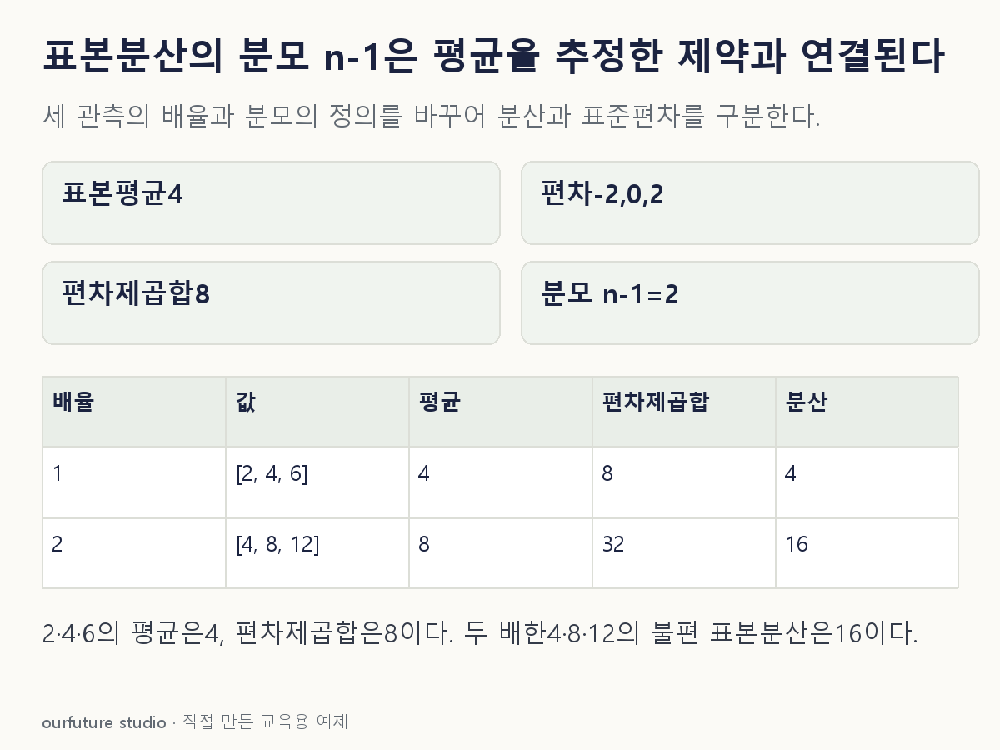

조건을 바꾸며 확인하기
n=3이다. iid·유한분산 조건의 불편성은 반복 표집의 성질이며 한 표본이 참 모분산과 같다는 뜻은 아니다.
기본 예제와 비교하기
아래 그림과 표는 글의 기본 조건입니다. 입력을 바꾼 결과는 계산 칸에서 확인하세요.

같은 문제를 직접 골라 보기
독립·동일분포 표본 2·4·6이다. 모분산의 불편 추정량 s²=Σ(x−표본평균)²/(n−1)을 쓴다.
조건을 더 바꾸면?
원래 세 값을 모두 2배하여 4·8·12로 바꾸면 같은 정의의 표본분산은?
변형 풀이 확인
16
편차가 모두 2배이고 제곱합은 4배가 되므로 분산도 4×4=16이다.
편차를 제곱했으니 단위와 배율도 제곱된다.